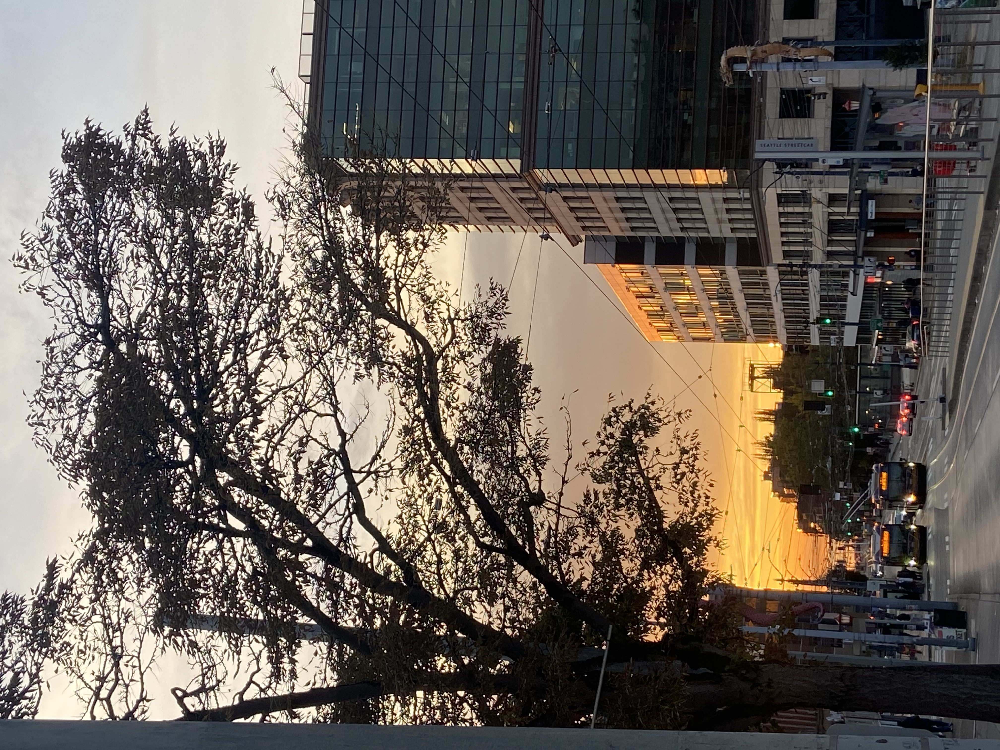

Autumn 2021
Honors 100
Introduction to the honors program and the requirements to be completed by the time of our graduation.
Eng182: Multimodal Composition
Creating multimodal composition writing. Composing various forms of media to disseminate information for the appropriate audience and purpose.
PolSci202: Introduction to American Politics
Exploration of the historical foundations of American politics and an examination of the changes of these institutions and actors over time.
Soc110: Survey of Sociology
Explores concepts like the Sociological Imagination as well as other prominent Sociologists and their theories.